Social Media Survey Platform with Webcam-Calibrated Attention Tracking
2026.02 – 2026.06 · 悉尼大学 COMP5703 Capstone（CS14-1）· 客户委托 · 已上线
我的角色：Product Owner（客户对接 · 产品规划 · 8 人团队统筹）· Research Lead · Presentation Lead ＋ 浏览器端校准与视线追踪（前端开发）
技术栈：Next.js 15 · React · TypeScript · Tailwind · FastAPI · PostgreSQL · MediaPipe Face Mesh · WebRTC
线上地址：cs14.kazelis.top · 文档站：cs14-docs.kazelis.top
一句话介绍
这是一个给研究者用的社交媒体实验平台。研究者可以搭建一个"看起来像 X / Instagram / rednote"的信息流，自己控制每条帖子的标题、配图、点赞数和评论，把参与者随机分到不同实验组，再通过摄像头校准和浏览器端视线追踪，记录参与者看了什么、点了什么、停留了多久，最后导出成可以直接分析的数据。

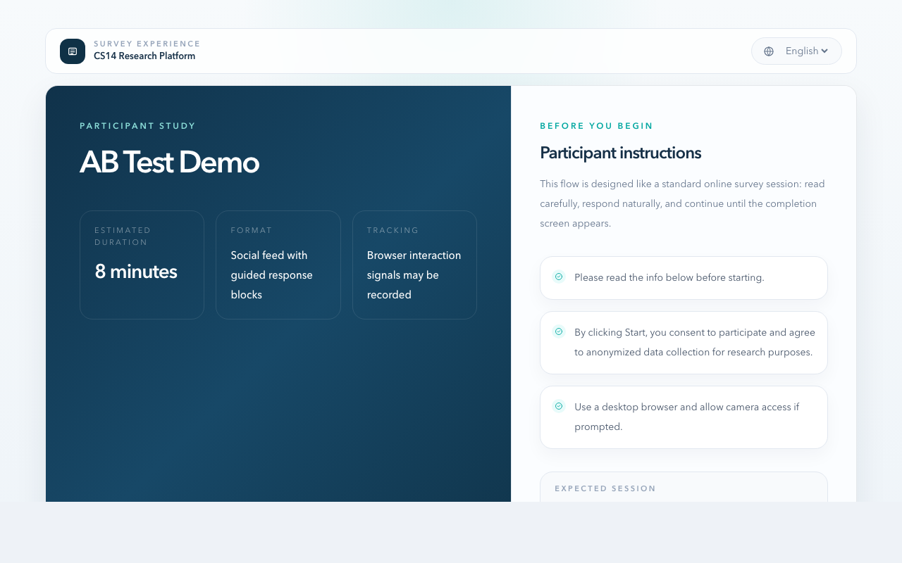
为什么要做这个
研究"虚假信息""可信度线索""点赞数对判断的影响"这类问题时，研究者会遇到两难：
- 用真实平台：内容、排序、推荐全都不可控，还涉及平台条款和伦理审批的问题。
- 用传统问卷工具：内容可控，但参与者看到的是一张截图加一道选择题，完全没有刷信息流的节奏感，也采不到"注意力"这类行为数据。
委托我们的客户公司：社交媒体与信息传播研究的公司要的，正是两者之间的一种东西：看起来像社交媒体、但每个变量都由研究者控制，而且能告诉研究者"这条数据靠不靠得住"。
我的角色
这个项目里，我站在客户公司和我们的团队中间。
客户是一家公司，平台最终交给他们内部的研究人员使用。他们清楚自己要研究什么、需要什么样的数据，但不会、也不需要关心 FastAPI 和 MediaPipe 是什么。我们这边是 8 位分属前端、后端、追踪、部署不同方向的同学，每个人都能把自己那块做好，但需要有人回答"我们到底在做一个什么产品、先做什么、做到什么程度算完"。我的工作就是回答这些问题。
具体来说，我有两重身份：
- Product Owner：对外，我是客户公司需求的入口，负责和客户方对接人开会、澄清需求、管理期望，以及最终的交付验收；对内，我负责产品规划，把客户的业务和研究诉求拆成团队可以执行的产品流程、规则和开发任务，协调各模块的边界和集成顺序，并在验收阶段组织问题排查和修复。
- 校准与视线追踪模块的开发者：参与者端的摄像头校准流程、MediaPipe 虹膜追踪、持续视线采集 hook，以及研究者侧的追踪演示页，最初都是我写的。
在项目提案的正式分工里，我还担任两个角色：Research Lead，负责主导技术可行性研究，重点是视线追踪方法和效果评估；Presentation Lead，负责统筹项目演示、汇报材料和面向客户的技术说明。
团队分工
| 成员 | 负责部分 |
|---|---|
| Yurou Chen | Team leader；参与者端 Survey Runner 与参与者前端 |
| Song Shi | 研究者端 UX 打磨；平台风格的参与者导航 |
| Qiuyi Li | Survey API；问卷数据模型；前后端联调 |
| Zhenyu Zhang | 后端数据与导出；Schema、CSV/JSON、数据库迁移、数据安全 |
| Zhijie Ma | 追踪数据链路与隐私；追踪后端测试与文档；最终证据与答辩材料 |
| Tianjun Gao（我） | Product Owner：客户对接、产品规划、需求拆解与验收；Research Lead；Presentation Lead；浏览器端校准；MediaPipe / WebRTC 视线追踪 |
| Zihan Chai | 研究者端 Survey Builder；工作流结构；文档与规划 |
| Yongchao Chen | DevOps 与部署；Docker / 云端；校准运行时的稳定性 |
统筹：在客户和团队之间
对客户：把一句话的需求变成可以验收的东西

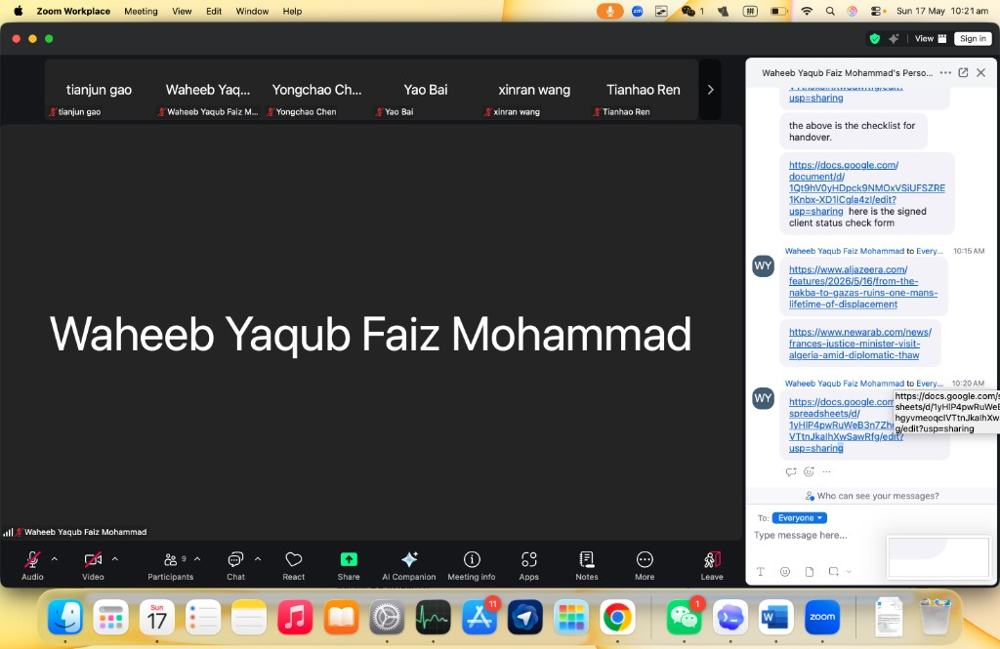
整个项目期间，我们和客户公司的对接人保持定期会议，每周一次，共 13 次。每次会上我主要做三件事：
- 澄清需求：客户方提的需求往往是一句话，比如"研究者如果想展示评论，必须自己手写评论内容"，或者"参与者的点赞、评论是额外需要保存的数据"。我会当场追问使用场景和边界，会后整理成团队能直接开工的需求。前一句后来变成了"研究者手写假评论"功能，后一句变成了"研究者设置的展示数值"和"参与者真实互动"两套分开的数据。
- 管理期望：客户方最初对"眼动追踪"的想象接近专业眼动仪。因为我自己在做校准模块，知道普通笔记本摄像头加浏览器能做到什么程度，所以能在早期就把目标定成"可靠的注意力信号 + 数据质量闸门"，而不是承诺像素级精度，避免了项目后期的落差。
- 演示与确认：作为 Presentation Lead，我负责统筹每个阶段给客户方的演示和汇报材料。我们用线上 Demo 展示真实效果，拿到反馈后排进下一轮。项目收尾时，我们按交付清单逐项完成交接，并拿到了客户公司签字的项目状态确认表。

对团队：规划、拆解、对齐
8 个人分布在前端、后端、追踪和部署四条线上，最容易出的问题是"每块都做完了，但拼不起来"。我做的事情主要有：
- 定义完整的产品流程：先把研究者和参与者的完整路径画出来（详见下一节），让每个人都知道自己负责的模块处在链路的哪一环、上下游是谁。
- 把需求拆成任务：把实验配置、互动模拟、注意力追踪、数据质量这几块复杂需求，拆成可以分配到具体模块的开发任务，并明确每个任务"做到什么程度算完成"。这些任务最终落在团队的项目甘特图上，从需求分析、原型设计、各模块开发，一直排到集成测试、部署和最终交付：

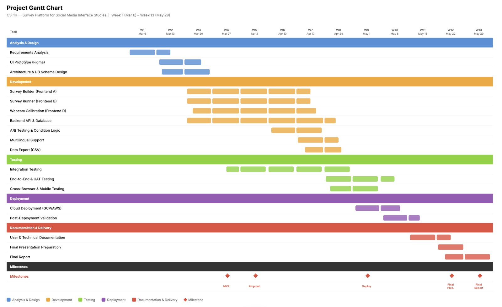
项目甘特图，由 Planning Coordinator Zihan Chai 维护。
- 前置技术风险：作为 Research Lead，我的职责之一是"研究可行性"。眼动追踪是全项目不确定性最高的一块，所以我先自己动手做出浏览器端校准的原型，验证"只用摄像头、不上传视频"这条路走得通，再让后端和追踪数据链路围绕它展开。
- 协调模块集成：校准模块需要和参与者端页面、追踪后端、部署环境三方对接。我负责理清它们之间的接口和集成顺序，比如校准会话由谁创建、何时算通过、通过后怎么把状态带进作答流程。
验收阶段：组织问题排查与修复
项目最后一个月，平台功能已经齐了，但"能用"和"能交付给客户公司投入研究使用"之间还有很大距离。这个阶段我组织了两轮系统性的问题排查：
- 第一轮：全模块质量审计。 按模块（后端路由、数据模型与迁移、导出、翻译、鉴权安全、校准与视线、参与者端、研究者端、分析面板）和严重程度（critical / high / medium / low）逐项梳理，共提交了 40 多个问题，其中包括"视线坐标越界导致整批数据被拒、视线数据全部静默丢失"这样的 critical 问题，以及"参与者可以和不属于自己实验组的帖子互动"这类直接影响实验有效性的 high 问题。团队按优先级分批修复，用几个 PR 集中合入。
- 第二轮：从客户公司的研究者视角走查。 我以研究者和参与者的身份把整个流程走了一遍，提出了几个直接影响使用体验的产品问题，包括：
- 已发布的问卷无法关闭 → 增加了"关闭 / 重新开放问卷"；
- 刷新或切换语言后要重新做一遍人脸校准 → 增加了"校准结果跨语言沿用"；
- 参与者端切换语言会影响研究者端的界面语言 → 两端语言状态彻底隔离；
- 语言覆盖不够 → 中文拆分为简体和繁体，并新增日语、韩语、西班牙语，最终支持 6 种语言的实验投递；
- 草稿状态下的预览没有意义 → 重新设计了研究者的测试会话入口。
这些问题全部在交付前修复完成，对应的修复提交都写了"closes #issue 编号"，可以在仓库里逐条追溯。
产品：把一个实验拆成一条完整的流程
我做 PO 时最先做的事，是把研究者的工作画成一条从头到尾不断开的链路。只要中间任何一步需要研究者"自己想办法"，这个工具就不算真的能用。
研究者侧：
- 创建实验：标题、语言、实验组数量、是否开启校准和追踪。
- 配置内容：粘贴新闻链接，后端自动抓取 Open Graph 元数据生成帖子卡片；研究者可以覆盖标题、图片、来源、点赞数、分享数，并手动写"假评论"。
- A/B 分组与预览：每条帖子可以只对某些组可见，或者按组覆盖展示数值，比如 A 组看到 1000 个赞、B 组看到 0 个。发布前可以按组、按语言预览。
- 发布：生成一个稳定的分享链接。
- 参与者作答：选语言 → 同意 → 摄像头校准 → 刷信息流、互动、答题。
- 分析与导出：分组对比、数据质量提示，以及按组、语言、完成状态、校准结果筛选的 CSV/JSON 导出。
在这条链路上，我定义了几条后来证明很关键的产品规则：
- 预览数据和正式数据隔离：研究者自己试跑产生的数据单独标记，默认不进入分析和导出，也不会触发"已有参与者，禁止修改实验"的锁。
- 实验一旦有正式数据就冻结结构：已发布的实验不能再改分组数、语言、追踪配置；有参与者作答后，帖子和题目也不能再改。否则同一份数据集里会混进两套实验条件。
- 完成判定：有必答题时，必须全部答完才能提交；没有题目时，至少要有一次真实互动（点赞、评论、点击、分享）。开启校准的实验，校准不通过不能提交。
- 异常会话标记：用时少于 30 秒的提交会被标记为
flagged，分析面板里还会单独列出"快速完成""零互动""重复评论"等会话。 - 中断后可恢复：参与者关掉标签页再回来，会回到同一条作答记录和同一个实验组，不会被重新随机分组。
这些规则的具体实现由后端和参与者端的同学完成。我的工作是在需求阶段就把它们定下来，并在验收时逐条对照。
我写的部分：浏览器端摄像头校准与视线追踪
这是整个平台里技术不确定性最高的一块：能不能只用参与者自己的笔记本摄像头，在浏览器里、不上传任何视频，得到可用的注意力信号？
0. 从原型到上线
第 4 周，团队的 Design Lead Zhijie Ma 在 Figma 里完成了全部 12 个界面的高保真原型。我负责从技术可行性的角度评审其中的校准界面：逐一确认"摄像头权限 → 人脸检测 → 九点校准 → 结果"这四步，在浏览器里都能用 WebRTC 的 getUserMedia、MediaPipe 人脸关键点和 Canvas 实现；人脸检测、光线、距离、稳定度这些状态指示，也都能由 MediaPipe 的输出实时驱动。

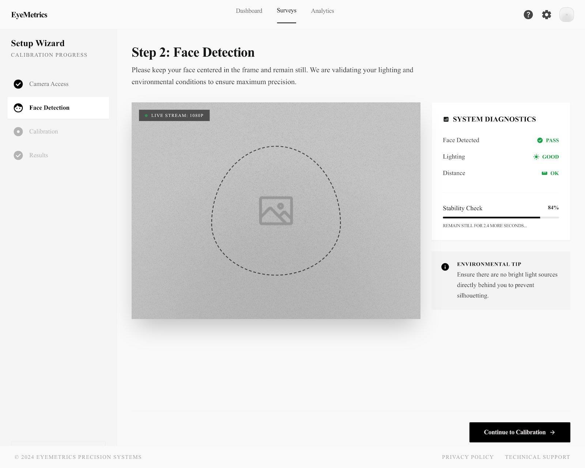

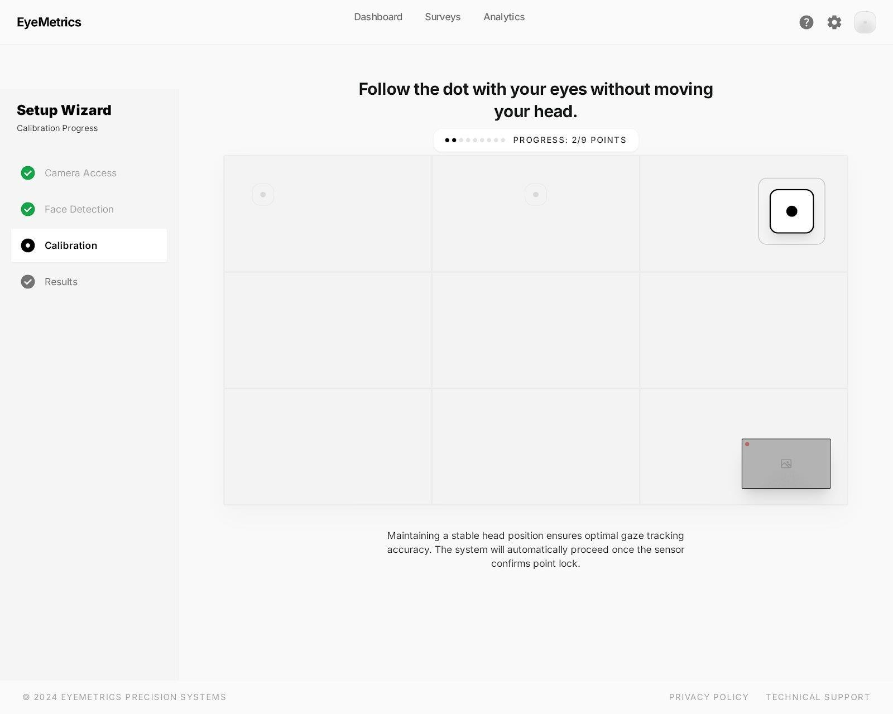
Figma 原型由 Zhijie Ma 设计，我负责校准界面的技术可行性评审。
第 6 周，我做出了第一版可以运行的四步校准流程，接通了后端的校准接口，并在组会上做了演示。第一版是深色主题：

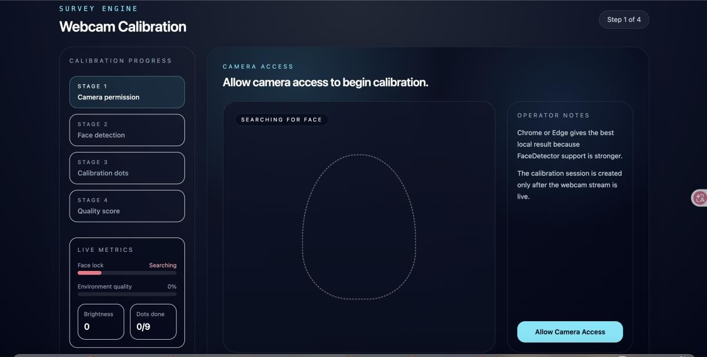

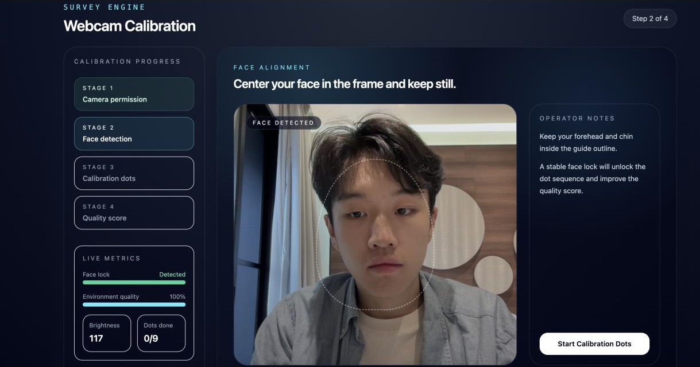
第 7 周，我把占位用的模拟虹膜数据换成了真实的 MediaPipe Face Mesh 追踪，写了作答过程中持续采集视线的 useGazeTracker hook，并把校准接进参与者作答页面。之后，校准页面又统一成了和整个平台一致的浅色主题，也就是下面这个最终上线的版本。
1. 校准流程

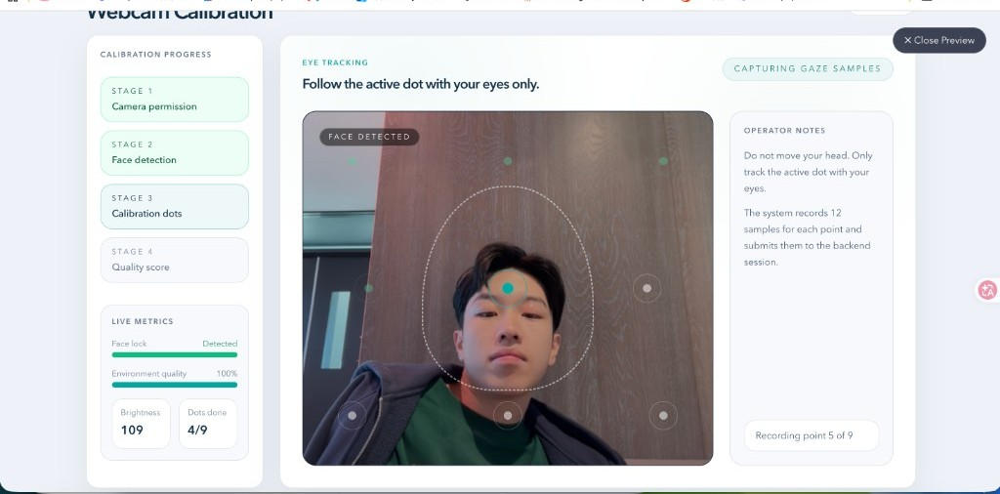
校准分四个阶段：摄像头权限 → 人脸检测 → 九点校准 → 质量评分。
- 人脸与虹膜追踪：用 MediaPipe Face Mesh 在浏览器里实时跑出 468 个面部关键点，加上虹膜关键点（左右虹膜中心分别是 468 和 473 号点），大约每秒 30 帧。
- 头部姿态估计：用鼻尖、额头、下巴和两侧脸颊的关键点估算头部的偏航角（yaw）和俯仰角（pitch），用来判断参与者是不是"只动眼睛、没有转头"。
- 九点采样：屏幕上依次亮起 9 个点。每个点先停留 1.2 秒，让视线稳定下来，再采 12 个样本，每个样本包含左右虹膜坐标、是否检测到人脸、头部角度，然后提交到后端会话。
- 环境检测：实时计算画面亮度，在光线太暗时提前提示参与者，不让他们走到最后一步才失败。
- 失败可重试：质量为 poor 时，参与者可以直接重新校准，不需要从头开始作答。
这个模块最早是用随机数模拟的样本跑通流程的，后来我把它换成了真实的 MediaPipe 虹膜数据。团队里负责追踪后端的 Zhijie Ma 和负责部署的 Yongchao Chen，后续又在这个基础上做了运行时复用和安全加固。
2. 质量评分

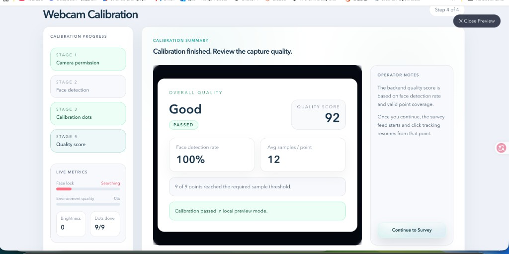
质量分由后端根据原始数值样本计算，满分 100：
quality = 100 × (0.40 × 有效点覆盖率
+ 0.30 × 人脸检出率
+ 0.20 × 头部稳定度
+ 0.10 × 样本充足度)
单个点要同时满足三个条件才算有效：至少 10 个样本、人脸检出率 ≥ 70%、头部稳定度 ≥ 70%。得分 ≥ 70 判定为通过，≥ 85 且各分项都达标才评为 Good。

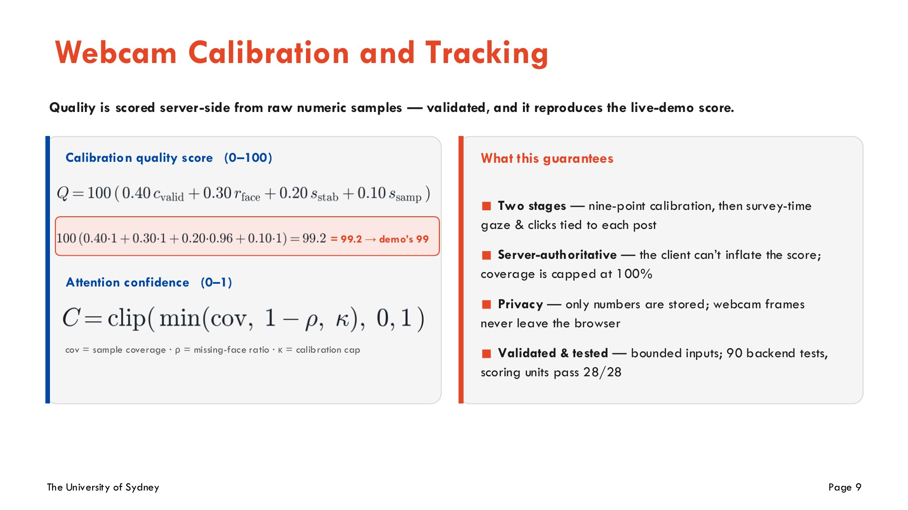
期末答辩中讲解校准质量分和注意力置信度计算方式的一页。
注：上图是研究者在"新建实验"页面里打开的本地预览模式，没有连接真实的参与者会话，所以结果卡片上写着 "passed in local preview mode"。真实参与者的分数由后端计算。
3. 作答过程中的持续视线追踪
校准通过后，追踪会在参与者刷信息流的全过程中持续运行：
- 按实验设置的间隔（默认 1 秒）采样一次虹膜位置，同时记录当时屏幕上露出面积最大的是哪条帖子，把每个样本都绑定到一条具体的帖子上。
- 样本在浏览器里缓冲，每 5 秒批量上传一次，避免频繁请求压垮后端。
- 同时统计"应采样次数 / 实际检测到人脸的次数 / 人脸丢失时长 / 掉线次数"，在提交时汇总成 attention confidence（0–1）和 high / medium / low 质量分档，导出时跟着每一条作答记录走。
为了让研究者和客户直观看到追踪到底在做什么，我还做了一个独立的追踪演示页（/demo-tracking）。页面上实时画出人脸网格和虹膜点，并显示左右虹膜坐标、估算的屏幕注视点、是否检测到人脸以及帧率。每次给客户演示时，这一页最能让大家理解"摄像头到底采集了什么、没有采集什么"。

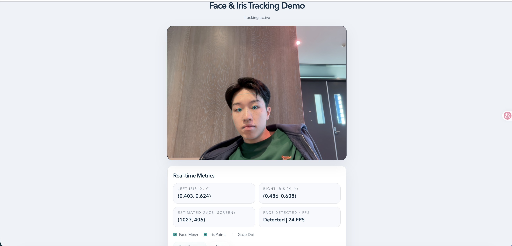
4. 隐私边界
我们在设计之初就定下了一条硬规则：摄像头画面永远不离开浏览器。后端只存数值，包括虹膜坐标、校准判定和注意力摘要，不存图片、视频或任何可以还原人脸的数据。导出的参与者 ID 也是哈希过的匿名 ID。这不是事后补上的一句免责声明，而是决定了整个技术方案：所有计算都必须在浏览器里完成。
我的思考
1. "校准通过"不等于"视线准确"
做完这个模块，我最大的收获是想清楚了我们的质量分到底证明了什么。
现在的校准分衡量的是：人脸在不在、头稳不稳、样本够不够。它能很好地证明"这个参与者在认真配合、摄像头条件合格"，但不能证明系统估算的注视点有多准。作答阶段的屏幕坐标，目前是由"虹膜在眼眶里的相对位置"直接换算出来的，还没有用九个校准点去拟合个人化的映射模型。
所以我会这样描述这套系统的能力：它是一个可靠的"注意力在场"信号，加上一道数据质量闸门，而不是精确到像素的眼动仪。 这也是我们在答辩里坚持的原则：每个结论只说到证据能支撑的程度。
如果继续做，下一步很明确：
- 用九个校准点的虹膜中位数和目标屏幕坐标，拟合一个二次多项式回归，作为个人化的注视点映射；
- 增加几个"验证点"，计算真实的像素误差（
validation_error_px），让质量分真正包含"准不准"这一维； - 把注意力摘要里的计数改为由服务器根据实际收到的样本推算，而不是完全依赖客户端上报。
2. 真实感和可控性是一组交换
我们做的是"像社交媒体"的信息流，而不是社交媒体的复刻：熟悉的节奏和布局，但没有复制任何平台的商标和界面。这既避开了平台条款的风险，也让每一个变量都能被研究者控制。几乎每个设计决策都是在用一点真实感，换取控制力、隐私和可维护性。
3. 好的研究工具，核心是"数据能不能直接用"
一开始大家的注意力都在"功能够不够酷"上，比如多平台皮肤、实时视线、多语言。但真正决定这个工具对研究者有没有价值的，是那些不起眼的规则：预览数据会不会污染正式数据？实验改了一半，前后两批参与者是不是还在同一个条件下？30 秒刷完的样本能不能被识别出来？我觉得 PO 最该守住的，就是这些规则。
4. 统筹的本质是"让每个人知道完成的标准"
8 个人的团队里，大家都很能干，真正稀缺的是共识：这个功能是给谁用的？做到什么程度算完成？它和隔壁模块怎么对接？我花在写文档、开会对齐、提 issue 上的时间，比写代码的时间多得多。但最后一个月那几十个 issue 能被有序地修完，靠的正是前期把流程、规则和验收标准都讲清楚了。我学到的是：协调不是传话，而是把模糊的东西变成所有人都能对照检查的标准。
5. 做 PO 的同时写代码
亲手写校准模块，让我在讨论需求时更有底气。我知道 MediaPipe 在弱光和侧脸时会丢帧，知道 12 个样本大概需要 1.5 秒，知道"实时注视点"在普通摄像头上能做到什么程度。这让我在和客户公司沟通时，可以把期望设定在一个团队真正能交付、数据也真正站得住的位置上。
结语
项目最后上线了：公开 Demo、研究者手册、完整的导出能力，客户公司签了字，交付完成。
说实话，签字那天没有烟花，也没有人开香槟。只有一张表格、一个 Google Drive 链接，和八个熬了一学期的人终于可以不用再看 issue 列表了。但我回头看这四个月，觉得这件事比"做完了一个 capstone"要大一点。
我们在做的，其实是一件反着来的事
这个时代最值钱的东西是注意力。每一个 App 都在想办法测量你的注意力：你在哪条视频上多停了两秒，你的手指在哪张图上犹豫了一下。然后把这些数据喂给推荐算法，再把你的注意力卖出去。
我们做的东西用的是同一套手段：摄像头、视线、停留时长、点击，方向却是反的。我们测量注意力，不是为了留住谁、卖给谁，而是为了帮研究者回答一个问题：人到底是怎么被一条假新闻骗到的？ 是标题？是配图？还是那一千个点赞？
而且我们给自己定了一条很"轴"的规矩：摄像头画面一帧都不许离开浏览器。 能不碰的数据，就不碰。这条规矩让技术方案难做了很多，但我一点都不后悔。如果连做研究工具的人都不在乎被测量者的隐私，那这个行业就没救了。
敢说"这不是眼动仪"，也是一种本事
做到后面我发现，这个项目最难的地方根本不是写代码，而是诚实。
"网页摄像头眼动追踪"这几个字，放进简历、PPT、答辩里，听起来都特别唬人。最省事的做法就是顺着往下吹：精准注视点、像素级热力图、AI 注意力分析，随便挑。但我自己写过校准模块，我太清楚它能做到哪儿、做不到哪儿了。
所以我宁愿在文档里、在答辩里、在这篇博客里，把话说清楚：它是一个可靠的"注意力在场"信号，加一道数据质量闸门，不是眼动仪。 这句话不酷，但它站得住。研究工具最怕的不是功能少，而是让研究者拿着一份"看起来很科学"的数据，得出一个错的结论。我宁可被人说"你们这个不够强"，也不想被人说"你们这个不靠谱"。
从"写好我那块"到"为整件事负责"
这个项目对我个人最大的改变，是视角换了。
刚开始的时候，我的想法很简单：把校准模块写好，跑通，交差。后来做 PO、做 Research Lead、做 Presentation Lead，一个人挂三个头衔（听起来很厉害，其实就是事情多），我被迫开始想另一类问题：客户真正要的是什么？八个人的东西怎么拼成一个产品？研究者拿到导出文件的那一刻，会不会骂我们？
写好自己那块，是工程师的本分；为整件事有没有意义负责，是另一种活法。前者让你被需要，后者让你被信任。这个学期，我第一次认真地选了后者，而且发现自己挺喜欢的。
我不是组里代码写得最多的人，也不是画图画得最好的人。但我想做那个在大家都说"差不多了"的时候，还敢站出来说"不行，研究者用不了，再来一轮"的人。最后一个月那几十个 issue，就是这么一条一条被"再来一轮"出来的。烦人吗？挺烦人的。但交付的时候，每一条都站得住。
最后
如果非要用一句话总结这个项目，我会说：
我们没有做出一个能看穿人心的系统，但我们做出了一个不骗人的系统。
在一个人人都想测量注意力、人人都在吹数据有多准的时代，后者可能更难，也更值得。
至于下一步，九个校准点的回归映射我已经想好怎么写了。这个"不是眼动仪"的东西，说不定哪天就真成眼动仪了。到时候我再回来，把这篇博客的结论改掉。